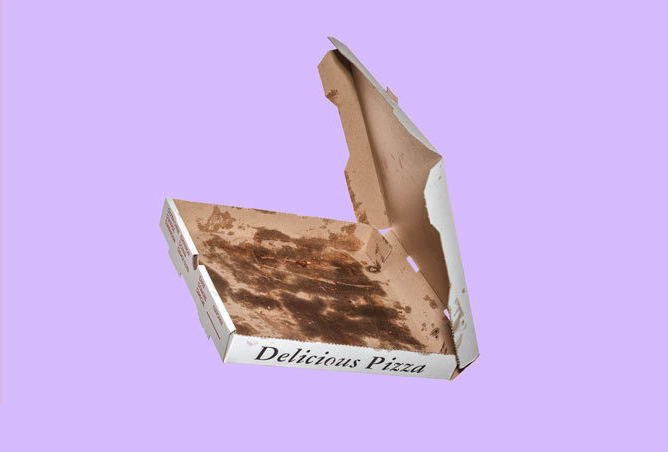
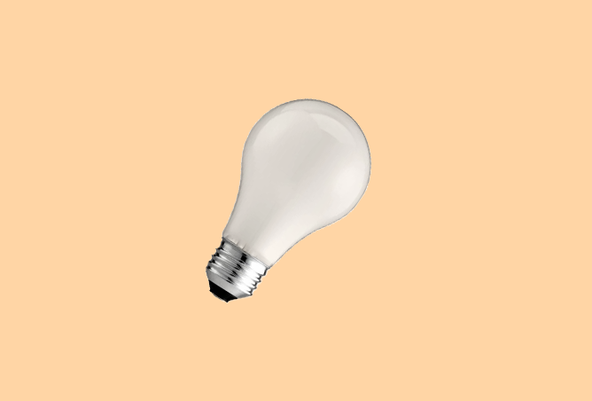
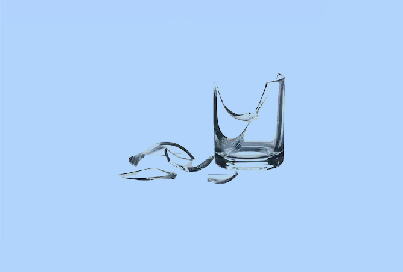
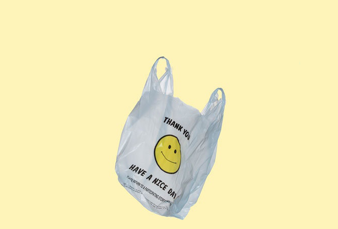

like us on facebook
Live Green
The importance of sorting your waste right.
by: Daniel Berger
5th october 2019
I think we have all been in that situation where you are standing in front of your bins, holding an empty product of some kind in your hands and just wondering to yourself 'so where does this belong' before just going with your gut instinct and choosing one of them.
At least I regret to say that I have.
Now a days we have multiple bins in order to separate or trash correctly because it's extremely important for our environment and after reading this article I do hope you agree.
What happens if we don't
separate our waste correctly?
You might ask yourself. Well the short answer would be "then we might aswell be throwing everything directly into a landfill."
Now if you look up the definition of landfill the dictionary tells us it is "the disposal of waste material by burying it, especially as a method of filling in and reclaiming excavated pits." Doesn't sound great does it?
Well it's actually worse than it sounds. Items that are contained within a landfill release toxic gases like methane as they begin to decompose. Methane is 25 times more poisonous than carbon dioxide and is one of the main causes of global warming and climate change.
So recycle, just make sure you're doing it right because you might think you're helping, but when done wrong we could run the risk of actually contaminating the entire recycling process.
Littered light bulbs | Martina Leitschuh
"Most contamination happens when people try to recycle materials they shouldn’t," Mr. Bell said. An example of this is disposable coffee cups which are usually lined with a thin inner layer making them liquid-proof but challenging and expensive to reprocess.
Unwashed plastics can also cause contamination.
“If we don’t get it clean, we’re not going to be able to market it, and if we can’t market it unfortunately it’s going to go to the landfill,” said Mr. Penning, the Rogue spokesman.
It can also be dangerous to transport and process materials that do not belong at recycling facilities. For example, pressurized cylinders or containers and aerosol containers with contents remaining can cause fires and explosions in trucks and machinery.
Littered light bulbs | Martina Leitschuh
As a person who has traveled to and lived in many different countries around the world I speak from experience when I say that almost every country has its own rules and regulations when it comes to recycling (if they even do) so its understandable why we as consumers have such a difficult time reading between all the lines.
Heres a great analogy.
Lets compare our rules and regulations of recycling with those of the road, or to simply put road signs. If we wanted everyone to drive safely, we would never allow each country to make their own road safety signs, right? Because there are society-wide standardized road signs, we only go through drivers' education once and then we can all drive safely anywhere for the rest of our lives. So the question stands why are our recycling methods not globally standardised?
Recycling symbols.
So if you haven't noticed before most products do try to guide us in the right direction using recycling symbols, but sadly these too are insanely confusing and far from well known.
Below are two images to help you understand the mess that is recycling codes.
Common mistakes.

A major contamination culprit is food residue. Washing out food scraps from recyclables is just as important as putting the right thing in the recycling bin!

Pizza boxes are among the most common offenders when it comes to contamination. The oil and grease cannot be separated from the fiber, making that material unrecyclable (throw it in the trash).

Your disposable coffee cup might seem like it can be recycled, but most single-use cups are lined with a fine film of polyethylene. If you’re putting these cups in with your recycling, they are likely contaminating the rest of the materials

Light bulbs should be disposed of in normal household waste. They cannot be recycled as with regular glass, as the fine wires in glass processing are very difficult to separate out and the cost to recycle these items is prohibitive.

Unfortunately, drinking glasses cannot be recycled because they contain added chemicals. These chemicals mean that the glass has a different melting point than the types of glass typically put in recycling bins.

You might have gotten into the habit of collecting your paper, plastics and glass in used plastic bags, but it’s important to note that the bags themselves should not be put in the recycling cart.